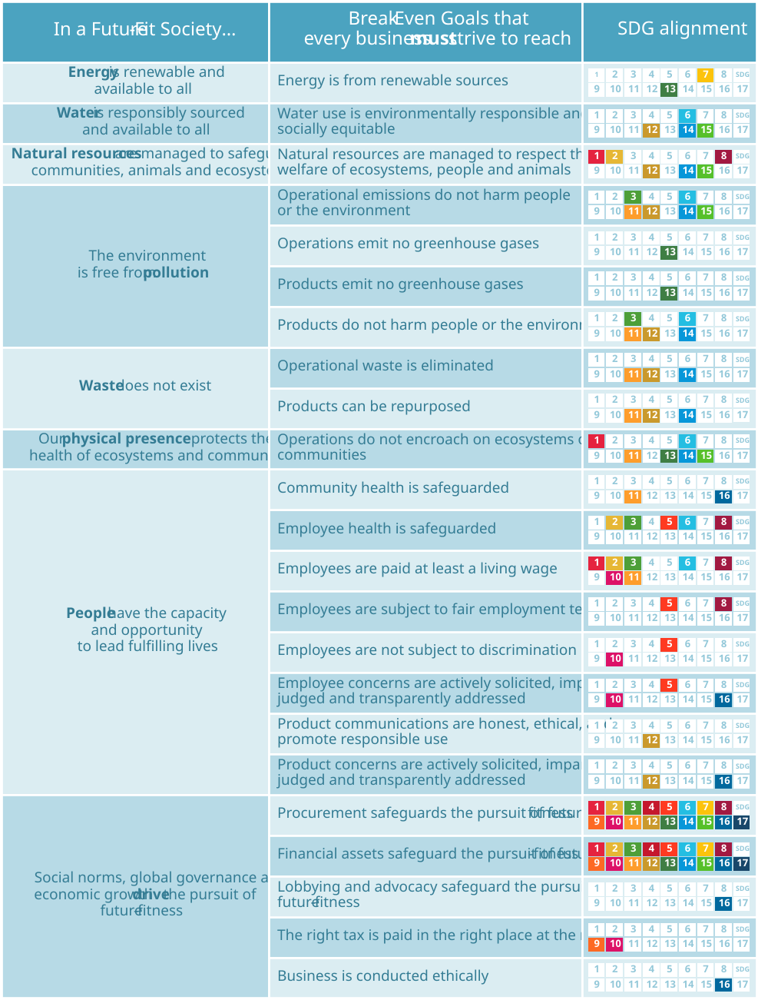

6. Break-Even-Ziele
Abbildung 6.1: Die zukunftsorientierten Break-Even-Ziele.

Die hier vorgestellten 23 Break-Even-Ziele sind nach den acht Eigenschaften einer zukunftsfähigen Gesellschaft gruppiert. Für jedes Ziel wird eine Zusammenfassung bereitgestellt, zusammen mit einem Link zum Herunterladen des Aktionsleitfadens des Ziels, in dem detaillierte Anleitungen zur Verfolgung des Ziels zu finden sind.
6.1 Energie
In einer zukunftsfähigen Gesellschaft ist Energie erneuerbar und für alle verfügbar.
BE01: Energie stammt aus erneuerbaren Quellen
Öl, Kohle und Gas werden oft auf umweltschädliche Weise gewonnen und ihre Verwendung als Brennstoffe führt zu Treibhausgasemissionen. Darüber hinaus sind diese Ressourcen endlich und ihr Wert für die Gesellschaft geht weit über die Verbrennung hinaus.
Um zukunftsfähig zu sein, muss ein Unternehmen sicherstellen, dass die gesamte von ihm verbrauchte Energie – sei es Strom, Wärme oder Treibstoff – aus erneuerbaren Energiequellen stammt. Dazu gehören Solar-, Wind-, Wellen- und Wasserkraft, geothermische Ressourcen und Biomasse.
Sehen Aktionsleitfaden.
6.2 Wasser
In einer zukunftsfähigen Gesellschaft wird Wasser verantwortungsvoll beschafft und steht allen zur Verfügung.
BE02: Die Wassernutzung ist umweltverträglich und sozial gerecht
Durch übermäßige Wasserentnahmen, die Einleitung von verschmutztem Abwasser oder durch die Beeinträchtigung der Eigenschaften des entnommenen Wassers vor der Rückführung in die Natur kann ein Unternehmen die Menge, Qualität und Verfügbarkeit von Wasser auf lokaler Ebene beeinträchtigen.
Unternehmen müssen sicherstellen, dass ihre Wassernutzung nicht die Menge und Qualität des Wassers beeinträchtigt, das den Menschen und Ökosystemen zur Verfügung steht, die von den betreffenden Wassereinzugsgebieten abhängig sind.
Um zukunftsfit zu sein, muss ein Unternehmen:
- den Wasserverbrauch für industrielle und kommerzielle Zwecke minimieren – und in wasserarmen Regionen schließlich ganz beseitigen; Und
- Stellen Sie sicher, dass Einleitungen die Qualität der aufnehmenden Gewässer oder die Gesundheit der aufnehmenden Böden nicht beeinträchtigen oder auf andere Weise Ökosystemen oder Menschen schaden.
Sehen Aktionsleitfaden.
6.3 Natürliche Ressourcen
In einer zukunftsfähigen Gesellschaft werden natürliche Ressourcen verwaltet, um Gemeinschaften, Tiere und Ökosysteme zu schützen.
BE03: Natürliche Ressourcen werden so bewirtschaftet, dass das Wohlergehen von Ökosystemen, Menschen und Tieren respektiert wird
Mit der steigenden Nachfrage nach natürlichen Ressourcen steigt auch der Druck auf die Ökosysteme, Menschen und Tiere, die zu ihrer Bereitstellung beitragen.
Der Schwerpunkt liegt hier darauf, dass durch den Besitz oder die Verwaltung und Gewinnung natürlicher Ressourcen durch das Unternehmen kein Schaden entsteht. Dazu gehören unter anderem:
- Ernte erneuerbarer Ressourcen mit einer Geschwindigkeit, die die Fähigkeit der Natur, sie zu regenerieren, nicht beeinträchtigt.
- Gewinnung nicht erneuerbarer Ressourcen auf eine Weise, die die umliegenden Ökosysteme und Gemeinschaften nicht systematisch schädigt.
- Das Wohlergehen der Tiere respektieren.
- Vermeidung von Konflikten und Menschenrechtsverletzungen beim Abbau wertvoller Mineralien.
Um zukunftsfähig zu sein, muss ein Unternehmen:
- die Gesundheit aller natürlichen Ressourcen bewahren, die das Unternehmen besitzt oder verwaltet; Und
- Schützen Sie die Gesundheit aller Ökosysteme und Gemeinschaften, die von Ernte- und Gewinnungsaktivitäten betroffen sind.
Sehen Aktionsleitfaden.
6.4 Umweltverschmutzung
In einer zukunftsfähigen Gesellschaft ist die Umwelt frei von Schadstoffen.
BE05: Betriebsbedingte Emissionen schaden weder Mensch noch Umwelt
Durch den Betrieb des Unternehmens kann eine Reihe von Chemikalien und Partikeln freigesetzt werden. Die Emission von Stoffen, die in der Natur bereits reichlich vorhanden sind, und von Stoffen, die die Natur schnell und folgenlos abbauen kann, stellen kein Problem dar.
Es ist bekannt, dass einige Substanzen für Menschen und Organismen giftig sind. Andere Stoffe scheinen vielleicht nicht unmittelbar schädlich zu sein, aber wenn die Natur sie nicht schnell abbauen kann, können sie sich – durch gasförmige, flüssige oder feste Emissionen – in der Umwelt systematisch in gefährlichen Mengen anreichern.
Zu den Stoffen, die am meisten Anlass zur Sorge geben, gehören solche, die in der Natur selten vorkommen (z. B. Spurenmetalle wie Cadmium), solche, die persistent sind (z. B. FCKW) und solche, die in großen Mengen emittiert werden (z. B. NOx). Alle diese potenziell schädlichen Stoffe müssen in eng geschlossenen Kreisläufen gehalten oder gar nicht erst verwendet werden. Der Kontext dieses Ziels kann je nach Stoff und Emissionsart von lokal (z. B. Boden, Flüsse) bis global (z. B. Luft, Ozeane) variieren.
Um zukunftsfähig zu sein, muss ein Unternehmen:
- Beseitigung schädlicher gasförmiger Emissionen (z. B. Luftschadstoffe, giftige Dämpfe);
- Beseitigung schädlicher Feststoffemissionen (z. B. knappe Metalle, Verwendung gefährlicher Düngemittel); Und
- Beseitigen Sie schädliche Flüssigkeitsemissionen (z. B. verschüttete Flüssigkeiten, chemische Flüssigkeiten).
Sehen Aktionsleitfaden.
BE06: Der Betrieb emittiert keine Treibhausgase
Die Natur kann jedes Jahr einige vom Menschen verursachte Treibhausgase (THGs) sicher absorbieren, aber das Gebot von Future-Fit besteht darin, dass Unternehmen alle betrieblichen Treibhausgasemissionen eliminieren. Das liegt daran, dass wir gefährlich nahe daran sind, atmosphärische Treibhausgaswerte zu erreichen, die für die Gesellschaft katastrophal sein werden, und jeder Versuch, das verbleibende CO2-Budget auf Unternehmen aufzuteilen, wahrscheinlich zu komplex, umstritten und/oder zeitaufwändig ist, um zu einem solchen Ausmaß zu führen Reduzierungsgeschwindigkeit, die jetzt erforderlich ist.
Um zukunftsfähig zu sein, muss ein Unternehmen durch seine eigene betriebliche Tätigkeit und seinen Energieverbrauch Netto-THG-Null ausstoßen. Netto-Treibhausgasemissionen bedeuten hier die gesamten Treibhausgasemissionen abzüglich etwaiger Emissionen, die dauerhaft gespeichert oder angemessen ausgeglichen werden.
Sehen Aktionsleitfaden.
BE18: Produkte emittieren keine Treibhausgase
Wie bei dem Ziel, dass der Betrieb keine Treibhausgase ausstößt, ist es für Unternehmen unerlässlich, alle durch ihre Produkte verursachten Treibhausgasemissionen zu eliminieren.
Mit Strom betriebene Produkte können indirekt Treibhausgasemissionen verursachen, wenn der Strom aus fossilen Brennstoffen stammt, die Produkte selbst verursachen dies jedoch nicht. Der Fokus liegt dabei auf Produkten, die als direkte Folge ihrer Nutzung Treibhausgase ausstoßen.
Um zukunftsfähig zu sein, muss ein Unternehmen sicherstellen, dass keines seiner Produkte Treibhausgase ausstößt.
Sehen Aktionsleitfaden.
BE17: Produkte schaden weder Mensch noch Umwelt
Obwohl viele Waren und Dienstleistungen auf eine Weise genutzt werden könnten, die den Menschen oder der Umwelt schadet, liegt der Schwerpunkt hier auf drei Bereichen: solchen, die Schaden anrichten sollen; diejenigen, deren Verwendung nach vernünftigem Ermessen zu einem Schaden führen könnte; und solche, die Verhaltensweisen einflößen oder verstärken, die den Fortschritt der Gesellschaft in Richtung Zukunftsfähigkeit untergraben.
Ein Future-Fit-Unternehmen stellt sicher, dass alle von ihm bereitgestellten Waren und Dienstleistungen bei bestimmungsgemäßer Verwendung nicht zu Umweltschäden, Störungen des Ökosystems oder negativen Auswirkungen auf das körperliche und geistige Wohlbefinden der Menschen führen.
In Bezug auf physische Güter umfasst dieses Ziel verkaufte und geleaste Güter sowie alle anderen Gegenstände, die anderen zur Unterstützung kommerzieller Aktivitäten zur Verfügung gestellt werden, die das Unternehmen jedoch nicht als umsatzgenerierend ansieht. Es umfasst sowohl Endprodukte des Endverbrauchers als auch Zwischenprodukte, die von anderen Unternehmen in Endprodukte eingearbeitet oder verarbeitet werden.
Um zukunftsfähig zu sein, muss ein Unternehmen sicherstellen, dass die Waren und Dienstleistungen, die es anderen zur Verfügung stellt, bei ihrer Nutzung und (im Fall physischer Güter) am Ende ihrer Lebensdauer voraussichtlich keinen Schaden für Menschen oder die Umwelt verursachen.
Sehen Aktionsleitfaden.
6.5 Abfall
In einer zukunftsfähigen Gesellschaft gibt es keinen Abfall.
BE07: Betriebsbedingter Abfall wird eliminiert
Für die Zwecke dieses Ziels bedeutet Abfall alle Materialien, die als Nebenprodukte der Produktion und anderer betrieblicher Aktivitäten anfallen, die das Unternehmen eindämmen kann und die behandelt, wiederverwendet oder entsorgt werden müssen.
Dazu gehören sowohl gefährliche als auch ungefährliche Produktionsmaterialien sowie nicht produktionsbezogene Abfälle wie Büropapier, Lebensmittel und ausgemusterte Geräte.
Organische Abfälle können kompostiert und dem Boden wieder zugeführt werden, aber alle Materialien, die wiederverwendet werden können, müssen zurückgewonnen werden.
Um zukunftsfähig zu sein, muss ein Unternehmen:
- jegliche vermeidbare Abfallerzeugung beseitigen; Und
- Restabfälle wiederverwenden, recyceln oder anderweitig einer anderen Verwendung zuführen.
Sehen Aktionsleitfaden.
BE19: Produkte können wiederverwendet werden
Ein Future-Fit-Unternehmen tut sein Möglichstes, um sicherzustellen, dass die physischen Güter, die es anderen zur Verfügung stellt, am Ende ihrer Nutzungsdauer einer verantwortungsvollen Wiederverwendung zugeführt werden können.
Dieses Ziel umfasst verkaufte und geleaste Waren sowie alle anderen Gegenstände, die anderen zur Unterstützung kommerzieller Aktivitäten zur Verfügung gestellt werden, die das Unternehmen jedoch nicht als umsatzgenerierend ansieht. Es umfasst sowohl Endprodukte des Endverbrauchers als auch Zwischenprodukte, die von anderen Unternehmen in Endprodukte eingearbeitet oder verarbeitet werden.
Um zukunftsfähig zu sein, muss ein Unternehmen:
- Stellen Sie sicher, dass alle Reste der von Ihnen gelieferten Waren am Ende ihrer Nutzungsdauer getrennt werden können, um ihren Verwertungswert nach der Verwendung zu maximieren. Und
- Stellen Sie sicher, dass seine Kunden einfachen Zugang zu Wiederherstellungsdiensten haben, mit denen dieser Wert erzielt werden kann.
Sehen Aktionsleitfaden.
6.6 Physische Präsenz
In einer zukunftsfähigen Gesellschaft schützt unsere physische Präsenz die Gesundheit von Ökosystemen und Gemeinschaften.
BE08: Der Betrieb greift nicht in Ökosysteme oder Gemeinschaften ein
Die wachsende Nachfrage nach Land übt Druck auf Ökosysteme, Gemeinschaften sowie Pflanzen- und Tierarten aus. Unternehmen, die die Auswirkungen ihrer physischen Präsenz nicht angemessen berücksichtigen, können zu einer irreversiblen Verschlechterung der natürlichen Prozesse und Ressourcen führen, auf die sie und andere angewiesen sind, und das Wohlergehen der lokalen Gemeinschaften gefährden.
Negative Auswirkungen müssen vermieden werden durch:
- Respektierung der Landrechte der Gemeinschaften (z. B. Nulltoleranz gegenüber Landraub).
- Schutz aquatischer Ökosysteme vor Verschlechterung (z. B. Vermeidung von Korallenriffen).
- Schutz von Gebieten mit hohem Biodiversitätswert (z. B. keine Abholzung von Regenwald für Ackerland).
- Kein Eingriff in Gebiete von kultureller Bedeutung (z. B. Ölpipelines, die durch Regionen verlaufen, die von indigenen Völkern als heilig gelten).
Um zukunftsfähig zu sein, muss ein Unternehmen:
- solche Gebiete schützen, in denen es bereits vorhanden ist; Und
- Maßnahmen ergreifen, um negative Folgen beim Umzug in neue Gebiete zu vermeiden oder abzumildern.
Sehen Aktionsleitfaden.
6.7 Personen
In einer zukunftsfähigen Gesellschaft haben die Menschen die Fähigkeit und Chance, ein erfülltes Leben zu führen.
BE09: Die Gesundheit der Gemeinschaft wird geschützt
Jedes Unternehmen ist auf den guten Willen, die Gesundheit und die Widerstandsfähigkeit der Gemeinschaften angewiesen, in denen es tätig ist, und muss sicherstellen, dass seine Präsenz ihr Wohlergehen nicht beeinträchtigt.
Future-Fit-Unternehmen unternehmen alle möglichen Schritte, um sicherzustellen, dass ihre Präsenz keine negativen Auswirkungen auf die umliegenden Gemeinden hat. Der Schwerpunkt liegt hier auf der Einrichtung geeigneter Mechanismen zur Vorbeugung, Identifizierung, Bewertung und Bewältigung von Anliegen der Gemeinschaft, damit potenziell schwerwiegende Probleme und berechtigte Beschwerden nicht unberücksichtigt bleiben.
Um zukunftsfit zu sein, muss ein Unternehmen:
- versuchen, Bedenken von Gemeinschaften zu antizipieren und zu vermeiden, die möglicherweise von seinen Aktivitäten betroffen sind;
- alle auftretenden Bedenken unparteiisch beurteilen; Und
- Stellen Sie sicher, dass diese Bedenken effektiv und transparent gehandhabt werden.
Sehen Aktionsleitfaden.
BE10: Die Gesundheit der Mitarbeiter wird geschützt
Unternehmen, die sich nicht angemessen mit Gesundheitsproblemen am Arbeitsplatz befassen, können für ihre Mitarbeiter langfristig schwerwiegende negative Gesundheitsprobleme verursachen.
Beachten Sie, dass sich "Gesundheit" hier über die körperliche Sicherheit hinaus auch auf das geistige und emotionale Wohlbefinden erstreckt und Stressbewältigung und -minderung umfassen muss.
Wenn es um die physische Sicherheit geht, sollten Unternehmen Maßnahmen ergreifen, um die Auswirkungen von Unfällen zu minimieren und abzumildern, und kontinuierlich danach streben, arbeitsbedingte Verletzungen, Krankheiten und Todesfälle auf Null zu reduzieren.
Um zukunftsfit zu sein, muss ein Unternehmen:
- Gewährleistung der Sicherheit aller Arbeitnehmer;
- die körperliche Gesundheit fördern (z. B. durch proaktive Positionen zu Bewegung, Ernährung und Rauchen); Und
- Förderung des psychischen Wohlbefindens (z. B. Nulltoleranz gegenüber Mobbing und Belästigung).
Sehen Aktionsleitfaden.
BE11: Arbeitnehmer erhalten mindestens einen existenzsichernden Lohn
Ein Unternehmen sollte sicherstellen, dass alle seine Mitarbeiter und ihre Familien über die Mittel verfügen, sich eine Krankenversicherung zu leisten, sich nahrhaft zu ernähren und sich keine Sorgen um die Befriedigung ihrer Grundbedürfnisse machen zu müssen.
Ein existenzsichernder Lohn ermöglicht den Arbeitnehmern und ihren Familien einen angemessenen Lebensstandard. Schätzungen zum existenzsichernden Lohn variieren je nach Region und Beratung wird von Regierungsbehörden, Wissenschaftlern und/oder NGOs angeboten. In vielen Regionen liegt der existenzsichernde Lohn über dem gesetzlichen Mindestlohn oder dem Armutsgrenzlohn. Bei der Berechnung existenzsichernder Löhne sollte der Schwerpunkt auf der Arbeitnehmerentlohnung im Hinblick auf die Standardarbeitszeit liegen: Die Zahlen sollten Überstundenvergütung sowie Produktivitätsprämien und Zulagen ausschließen, sofern diese nicht garantiert sind.
Um zukunftsfähig zu sein, muss ein Unternehmen allen Mitarbeitern mindestens einen existenzsichernden Lohn zahlen.
Sehen Aktionsleitfaden.
BE12: Für Mitarbeiter gelten faire Arbeitsbedingungen
Mitarbeiter, die angemessene Arbeitszeiten haben, sich in ihrer Beschäftigung sicher fühlen und ausreichend Freizeit haben, haben bessere Chancen, körperlich, emotional und geistig erfolgreich zu sein – innerhalb und außerhalb der Arbeit.
Das bedeutet, dass Arbeitnehmer das Recht auf Vereinigungsfreiheit (z. B. das Recht, einer Gewerkschaft beizutreten oder nicht beizutreten), das Recht auf angemessene Arbeitszeiten, das Recht auf Freizeit (z. B. Urlaubsansprüche und Überstundenvergütung) und das Recht auf Elternschaft haben müssen verlassen.
Um zukunftsfit zu sein, muss ein Unternehmen:
- sicherstellen, dass das Unternehmen keine Kinderarbeit einsetzt;
- Gewährleistung der Vereinigungsfreiheit der Mitarbeiter;
- Verträge so gestalten, dass sie faire Arbeitszeiten beinhalten; Und
- Planen Sie angemessene Freistellungen vom Arbeitsplatz ein.
Sehen Aktionsleitfaden.
BE13: Mitarbeiter unterliegen keiner Diskriminierung
Jeder hat Anspruch auf Gleichbehandlung und gleiche Chancen, unabhängig von persönlichen Merkmalen wie Alter, Geschlecht, sexueller Orientierung, ethnischer Zugehörigkeit, Herkunftsland oder Behinderung.
Diskriminierung am Arbeitsplatz kann viele Formen annehmen, und diskriminierendes Verhalten kann durch etablierte Normen und Praktiken innerhalb von Organisationen aufrechterhalten werden – oder zumindest unbemerkt und unangefochten bleiben.
Um zukunftsfähig zu sein, muss ein Unternehmen proaktiv Schlüsselpraktiken wie Einstellung, Gehaltsstrukturen, Einstellungen, Leistungsbeurteilung und Beförderungen untersuchen und überwachen, um sicherzustellen, dass es zu keiner Diskriminierung kommt, wie unbeabsichtigt sie auch sein mag.
Sehen Aktionsleitfaden.
BE14: Anliegen der Mitarbeiter werden aktiv geäußert, unparteiisch beurteilt und transparent angesprochen
Unternehmen sind auf das Engagement und die Motivation ihrer Mitarbeiter angewiesen, daher ist es betriebswirtschaftlich sinnvoll, sie so weit wie möglich einzubeziehen. Mit diesem Ziel soll ein Mindestmaß an akzeptabler Leistung in dieser Hinsicht festgelegt werden, was bedeutet, dass das Unternehmen nichts unternimmt, um das Wohlergehen seiner Mitarbeiter zu beeinträchtigen.
Kein Unternehmen kann völlig frei von den Bedenken der Mitarbeiter sein, aber es muss alle möglichen Schritte unternehmen, um Bedenken zu minimieren und auf auftretende Bedenken effektiv und angemessen zu reagieren.
Um zukunftsfähig zu sein, muss ein Unternehmen geeignete Mechanismen zur Identifizierung und Bewältigung von Bedenken der Mitarbeiter einrichten, damit potenziell schwerwiegende Probleme und berechtigte Beschwerden nicht unberücksichtigt bleiben.
Sehen Aktionsleitfaden.
BE15: Produktkommunikation ist ehrlich, ethisch und fördert eine verantwortungsvolle Nutzung
Manche Güter und Dienstleistungen können Menschen oder Ökosystemen Schaden zufügen, entweder aufgrund ihrer Gestaltung oder weil die Möglichkeit besteht, dass Benutzer sie missbrauchen oder falsch entsorgen. Das Unternehmen muss potenzielle Nutzer auf solche Risiken aufmerksam machen, um sie in die Lage zu versetzen, fundierte Entscheidungen über den Kauf, die Verwendung und (im Falle physischer Güter) die Weiterverarbeitung seiner Produkte zu treffen.
Darüber hinaus muss ein Unternehmen sicherstellen, dass es seine Produkte ehrlich und verantwortungsbewusst vermarktet, indem es alle irreführenden Behauptungen über Produktvorteile vermeidet und nur geeignete Kundengruppen anspricht (z. B. Zigaretten oder Alkohol nicht direkt an Kinder vermarktet).
Diese Anforderungen gelten sowohl für Endprodukte, die für Endverbraucher bestimmt sind, als auch für Zwischenprodukte, die von anderen Unternehmen in Endprodukte eingearbeitet oder verarbeitet werden.
Um zukunftsfähig zu sein, muss ein Unternehmen:
- sicherstellen, dass Benutzer über alle negativen Auswirkungen seiner Produkte informiert werden;
- sicherstellen, dass den Benutzern keine falschen oder irreführenden Behauptungen über die Vorteile ihrer Produkte auferlegt werden; Und
- Stellen Sie sicher, dass Produkte nur an Personen vermarktet werden, die in der Lage sind, fundierte Kaufentscheidungen zu treffen.
Sehen Aktionsleitfaden.
BE16: Produktbedenken werden aktiv geäußert, unparteiisch beurteilt und transparent angesprochen
Weitere Produktziele befassen sich mit der ethischen Vermarktung der Waren und Dienstleistungen des Unternehmens, mit der Frage, ob sie möglicherweise Schaden anrichten können, und mit der Frage, wie sichergestellt werden kann, dass Waren am Ende ihrer Nutzungsdauer wiederverwendet werden können. Durch die Umsetzung all dieser Ziele kann ein Unternehmen die Bedenken seiner Kunden minimieren. Dennoch ist es nach wie vor wichtig, dass Kunden berechtigte Bedenken äußern können – und dass auf diese Bedenken fair eingegangen wird –, wenn sie der Meinung sind, dass ein Unternehmen seinen Verpflichtungen nicht nachkommt.
Diese Anforderungen gelten sowohl für Endprodukte, die für Endverbraucher bestimmt sind, als auch für Zwischenprodukte, die von anderen Unternehmen in Endprodukte eingearbeitet oder verarbeitet werden.
Um zukunftsfähig zu sein, muss ein Unternehmen daher wirksame Richtlinien und Verfahren einführen, um Kundenanliegen im Zusammenhang mit den ökologischen und sozialen Auswirkungen der von ihnen gelieferten Waren oder Dienstleistungen aktiv einzuholen, unparteiisch zu beurteilen und transparent anzugehen.
Sehen Aktionsleitfaden.
6.8 Treiber
In einer zukunftsfähigen Gesellschaft treiben soziale Normen, globale Governance und Wirtschaftswachstum das Streben nach Zukunftsfitness voran.
BE04: Beschaffung sichert das Streben nach Zukunftsfähigkeit
Jedes Unternehmen ist in gewissem Maße auf Waren und Dienstleistungen angewiesen, die von anderen Organisationen bezogen werden, die zusammenfassend als Lieferanten bezeichnet werden. Gängige Beispiele sind Energie, Wasser, Computer, Transport, Maschinen, Möbel, Buchhaltungsdienste und Materialien, die zur Herstellung von Produkten erforderlich sind.
Alle Unternehmen sind gegenseitig verantwortlich für die ökologischen und sozialen Auswirkungen, die durch die Produktion und Lieferung der Waren und Dienstleistungen verursacht werden, von denen sie abhängig sind. Nur wenn ein Unternehmen solche negativen Auswirkungen effektiv vermieden oder angegangen hat, kann es sich als zukunftsfit bezeichnen.
Dieses Ziel erfordert von einem Unternehmen die Implementierung von Richtlinien und Verfahren, die kontinuierlich darauf abzielen, die Zukunftsfähigkeit seiner Einkäufe zu verbessern, wobei ein besonderer Schwerpunkt auf der Antizipation, Vermeidung und Bewältigung problemspezifischer Hotspots in der Lieferkette liegt.
Um zukunftsfähig zu sein, muss ein Unternehmen:
- über Richtlinien und Prozesse verfügen, die es dem Unternehmen und seinen Mitarbeitern ermöglichen, vorherzusehen, wo negative Auswirkungen auf die Lieferkette wahrscheinlich auftreten werden;
- Vermeiden Sie sie nach Möglichkeit. Und
- Ergreifen Sie messbare Schritte, um auftretende Bedenken auszuräumen.
Sehen Aktionsleitfaden.
BE20: Geschäfte werden ethisch geführt
Alle zukunftsfitten Break-Even-Ziele können und sollten als Fragen der Geschäftsethik interpretiert werden, die für jedes Unternehmen gelten. Im Gegensatz dazu konzentriert sich dieses Ziel auf die proaktive Identifizierung und präventive Prävention aller spezifischen Probleme, die aufgrund der Einzigartigkeit der Geschäftstätigkeit eines Unternehmens zu ethischen Verstößen führen könnten.
Die Arten von ethischen Verstößen, die auftreten können, variieren je nach Unternehmen stark, je nach Größe, Struktur, Branche, Geschäftsmodell, geografischer Präsenz usw. Ein zukunftsfähiges Unternehmen ist nicht immun gegen ethische Bedenken und Herausforderungen. Vielmehr werden wirksame interne Kontrollmechanismen eingerichtet, um die Wahrscheinlichkeit von Verstößen zu verringern und Menschen (Mitarbeiter und Dritte) zu ermutigen, Alarm zu schlagen, wenn es zu Verstößen kommt, und effektiv darauf zu reagieren. Beispiele für mögliche Probleme sind:
- Wettbewerbswidrige Praktiken (z. B. unfaire Lieferantenbehandlung, Preisabsprachen).
- Desinformation (z. B. falsche Darstellung oder Unterlassung der Offenlegung von Informationen, die die Entscheidungen oder das Wohlergehen von Stakeholdern beeinflussen könnten).
- Vertrauensmissbrauch (z. B. unangemessene Verwendung personenbezogener Daten).
- Vorsätzliche Ignoranz (z. B. Versäumnis, Lieferketten zu untersuchen, in denen Menschenrechtsverletzungen vermutet werden).
Um zukunftsfähig zu sein, muss ein Unternehmen:
- Identifizieren Sie Bereiche mit hohem Risiko für ethische Probleme im Unternehmen.
- eine öffentliche Verpflichtung zu ethischem Verhalten übernehmen; Und
- Richten Sie interne Kontrollen ein, um sicherzustellen, dass dieser Verpflichtung nachgekommen wird.
Sehen Aktionsleitfaden.
BE21: Die richtige Steuer wird zur richtigen Zeit am richtigen Ort gezahlt
Regierungen benötigen Steuereinnahmen, um wichtige Dienstleistungen zu finanzieren, von denen Gesellschaft und Unternehmen abhängig sind. Unternehmen sind gegenüber ihren Aktionären verpflichtet, bei Steuerzahlungen gewissenhaft vorzugehen. Dieses Ziel berücksichtigt die Tatsache, dass jedes Unternehmen durch die Besteuerung auch zu der Infrastruktur beitragen muss, die es nutzt und auf die es sich für seinen Erfolg verlässt (z. B. Verkehrsnetze, Rechtssystem, Gesundheitswesen, Bildung, öffentliche Versorgungseinrichtungen) und sogar zu seiner Existenz, was bedeutet, dass dies nicht der Fall ist im Widerspruch zueinander.
Um zukunftsfähig zu sein, muss ein Unternehmen:
- sich öffentlich zu einer verantwortungsvollen Steuerpolitik bekennen;
- einen transparenten Ansatz für die Steuerberichterstattung verfolgen; Und
- Sie suchen nicht bewusst nach Wegen, sich an den Buchstaben, aber nicht an den Geist der regionalen Steuergesetze zu halten.
Sehen Aktionsleitfaden.
BE22: Lobbying und Interessenvertretung sichern das Streben nach Zukunftsfähigkeit
Unternehmen versuchen oft, die Märkte, in denen sie tätig sind, zu beeinflussen, indem sie diejenigen unter Druck setzen und überzeugen, die die Macht haben, sie zu verändern.
Dieses Ziel erkennt an, dass jeder Versuch, die Marktdynamik zugunsten des Unternehmens zu beeinflussen, in keiner Weise dazu beitragen darf, den Fortschritt in Richtung Zukunftsfähigkeit innerhalb oder außerhalb des Unternehmens zu behindern. Beispielsweise würde ein Future-Fit-Unternehmen niemals wissentlich eine Organisation finanzieren, die gegen strengere Gesetze zu giftigen Emissionen protestiert.
Hier geht es nicht darum, proaktiv Lobbyarbeit zu leisten oder sich für die Ergebnisse von Future-Fit einzusetzen, sondern vielmehr sicherzustellen, dass das Unternehmen seinen Einfluss nicht nutzt, um solche Ergebnisse zu untergraben. Dazu gehören alle direkten Bemühungen des Unternehmens, die öffentliche Meinung zu beeinflussen (z. B. Verbraucherkampagnen), und auch Beiträge (z. B. Mitgliedsbeiträge oder Spenden) an Dritte, die im Namen des Unternehmens Einfluss nehmen können.
Um zukunftsfähig zu sein, muss ein Unternehmen:
- Implementieren Sie interne Kontrollen, um sicherzustellen, dass die Organisation keine Lobbyarbeit betreibt oder sich gegen die Ergebnisse von Future-Fit einsetzt. Und
- Offenlegung von Einzelheiten zu den Beiträgen, die es an externe Influencer leistet.
Sehen Aktionsleitfaden.
BE23: Finanzielle Vermögenswerte sichern das Streben nach Zukunftsfähigkeit
Viele Unternehmen besitzen oder kontrollieren finanzielle Vermögenswerte (Beteiligungsinvestitionen, Schuldtitel, Bareinlagen bei Banken) als Teil ihres Kerngeschäfts, als strategisches Geschäftsziel oder einfach als Methode zur Verwendung überschüssiger Barmittel, bis sie für andere Zwecke benötigt werden.
Der Kauf und Handel von finanziellen Vermögenswerten, die mit einer zugrunde liegenden Organisation verbunden sind, stellt dem Beteiligungsunternehmen Kapital zur Fortführung – oder Erweiterung – seiner Aktivitäten zur Verfügung. Alle vom Beteiligungsunternehmen verursachten positiven oder negativen Ergebnisse können durch das bereitgestellte Kapital aufrechterhalten oder gesteigert werden, und daher ist der Investor gegenseitig dafür verantwortlich.
Um zukunftsfähig zu sein, muss ein Unternehmen, das sein Kapital zur Finanzierung der Aktivitäten anderer einsetzt, bestrebt sein, das Streben nach Zukunftsfähigkeit sicherzustellen, indem es etwaige negative Auswirkungen, die sich aus diesen Aktivitäten ergeben, erkennt und abmildert.
Sehen Aktionsleitfaden.